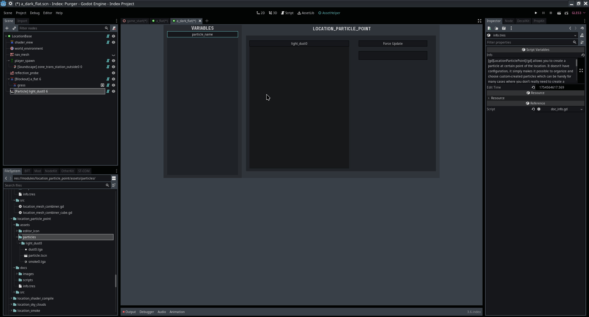

Module: location_particle_point
Documentation last edited: October 23, 2025 at 14:33 UTC
Description
LocationParticlePoint
позволяет тебе создавать частицы в определённой точке локации. У него нет конфигурации, он просто делает возможным организовывать и выбирать пользовательские частицы, что может быть полезно во многих случаях, когда тебе не нужно создавать целый пользовательский узел с элементами управления для них.

Как создать свою собственную частицу
Перейди в
"res://modules/location_particle_point/assets/particles/"
, каждая папка там - это уникальная частица. Каждая папка должна содержать
"particle.tscn"
, который будет представлять частицу.

Asset Helper облегчает выбор частицы из списка, так что имей это в виду.
Здесь не так много о чём говорить. Как уже было сказано, этот узел был создан в основном по организационным причинам, и он потенциально может получить больше функций в будущем.
General Information
Root directories list
assets, docs, src
Nodes
Classes
None
Resources
None
Other Scripts
None